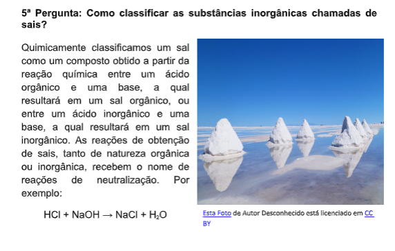
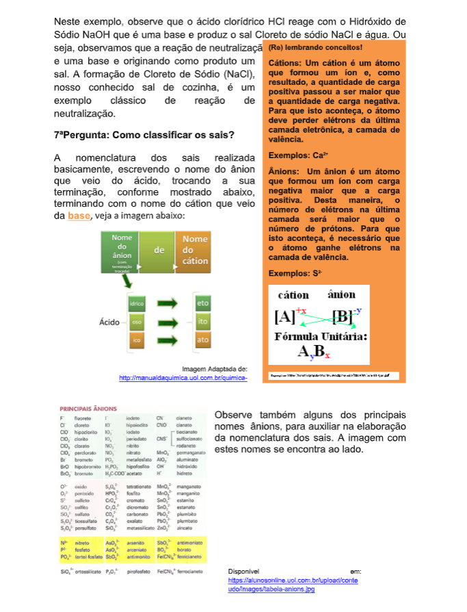
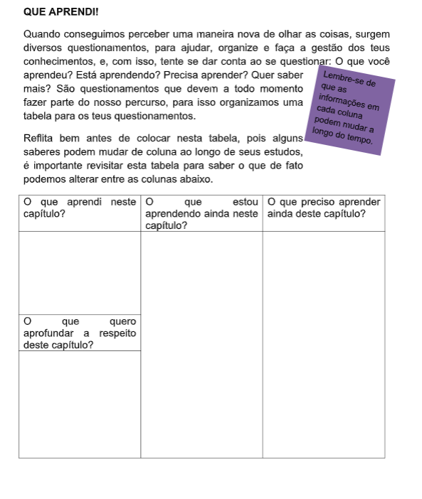

Capítulo 4
Setor calçadista e as representações gráficas
Como levar em consideração os conceitos movimentos com velocidades variáveis e suas projeções gráficas, no setor calçadista? Em que situações podemos aplicar estes conceitos na indústria de calçados?
CONSTEXTUALIZANDODentro deste setor processos necessitam levar em conta a variabilidades com que acontece, o número de uma determinada produção de calçados, o transporte de alguns insumos, como o couro, por exemplo, essa variabilidade por vezes é recomendação de setores econômicos ou técnicos produtivos. Pensar em situações que tenham fatores que se alteram continuam ainda relevantes, e, dessa relevância mais especificamente da variação de velocidade de produção e sua relação com o número de calçados produzidos, ou ainda, a relação entre os quilômetros percorridos pelos meios de transporte considerando suas velocidades variáveis aparecem como importantíssimas e representar estas informações de maneira gráfica para os movimentos estudados no capítulo anterior será nosso objetivo.
(Re)construindo ConceitosAs projeções gráficas podem aparecer em diversos contextos, neste capítulo vamos perceber como podemos utilizá-la para entender os movimentos com velocidades variáveis. Basearemos nosso estudo sempre em questionamentos.
1º Pergunta: Como elaborar gráficos da variação da posição em função do tempo (Sxt), da velocidade em função do tempo (Vxt) e da aceleração em função do tempo (axt) em um movimento progressivo acelerado? Para responder a estas questões utilizaremos um exemplo do capítulo anterior para demonstrar as características das representações gráficas. Uma empilhadeira desloca uma certa quantidade de material e varia no tempo sua velocidade de acordo com a aceleração de 2m/s 2 . Supondo que a empilhadeira parte do repouso, e da posição igual 0m. Construa os gráficos da velocidade, das posições e da aceleração em função do tempo para os três primeiros segundos. Para construir o gráfico ( a X t) necessitamos dos valores da velocidade para os três primeiros segundos, abaixo determinados, com base na tabela e na equação horária da velocidade que aparece na primeira linha da tabela.


